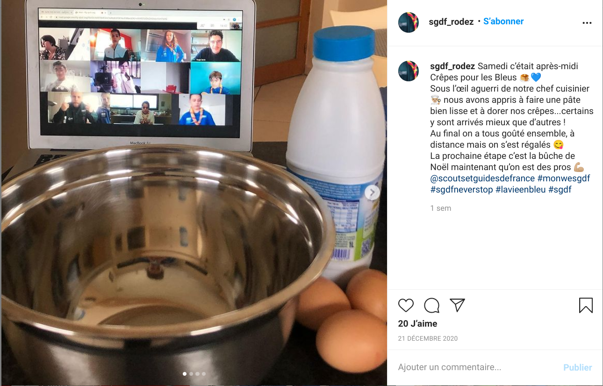
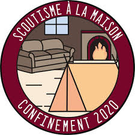
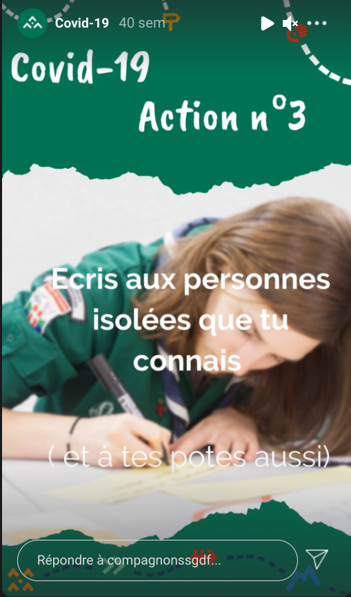

Une période compliquée
La crise sanitaire ets apparue de manière assez brutale, il a fallu trouver des solutions pour maintenir le scoutisme même à distance. Les imaginaires d'année devaient être gardés et ils ne fallait pas que les jeunes se sentent délaissés dans leur vie de scouts. Pour continuer à faire vivre le scourisme, plusieurs dispositifs ont été mis en place.
Tout d'abord, le national des sgdf a mis en place un hashtag "sgdfneverstop". Les jeunes, les chefs, ou n'importe quelle personne scoute pouvait publier une action en rapport avec le scoutisme, une réunion vituelle, une activité, un geste, avec "#sgdfneverstop". Le national pouvait alors regarder et le partager sur le compte officiel des sgdf, ce qui pouvait donner des idées aux autres ou juste montrer que le scoutisme e s'arrête pas seulement aux week ends en présentiel.
Au niveau des activité proposées par les différentes maitrises, il y en a plusieurs sortes. Certains ont optés pour des défis entre unités au sein du même groupe.Une liste de défis était donnés à tous les jeunes des farfadets aux compagnons et chaque défis fait gagner des points à l'unité du jeunes. A la fin du délais, le comptage des points se fait et l'unité qui a le plus de points gagne. D'autre groupes ont choisi de maintenir les week ends... Mais à distance ! Et oui, avec l'aide des parents, des week ends ont pu avoir lieu à travers des logiciels comme Discord par exemple. Les jeunes pouvaient se voir, faire des activités ensemble et ont même campés dans leur salons ! Après cette expérience, un nouvel écusson a été créé: "scoutisme à la maison".

Pour les compagnons, le national a mis en place des activités d'action solidaires comme écrire à une personne isolée, contacter sa mairie pour faire des services à la ville,s'engager dans le service civique, etc. Le mouvement essaie de transmettre la notion de solidarité pendant ces temps de crise sanitaires.